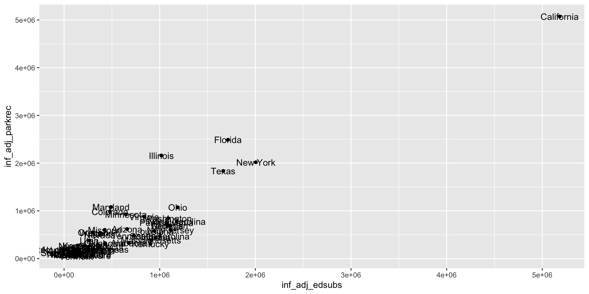
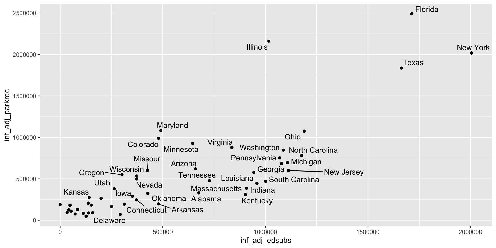

Week 10 - STEM 691
Plot Design in {ggplot2}
One More Pkg {ggrepel}
- {ggrepel} helps with overlapping text labels
geom_text_repel()andgeom_label_repel()- equivalent to
geom_text()andgeom_label()but with repelling
tidykids_wider |>
filter(state != "California") |>
ggplot(aes(x = inf_adj_edsubs, y = inf_adj_parkrec)) +
geom_point() +
geom_text(aes(label = state))
library(ggrepel)
tidykids_wider |>
filter(state != "California") |>
ggplot(aes(x = inf_adj_edsubs, y = inf_adj_parkrec)) +
geom_point() +
geom_text_repel(aes(label = state))

{patchwork}

{patchwork}

{patchwork}

{patchwork}

{patchwork}
- #1: In chat! What’s my code?…

{patchwork}
- #2: In chat! What’s my code?…

{patchwork}
- #2: In chat! What’s my code?…

{patchwork}
- #3: In chat! What’s my code?…
(p1 + p2 + p3 + p4) / p5
# ((p1 | p2)/(p3 | p4)) / p5 Also (generally) works
# ((p1 + p2)/(p3 + p4)) / p5 Also (generally) works
{patchwork}
- #3: In chat! What’s my code?…
- In the weeds a little… how are these different?

{patchwork}

{patchwork}

{cowplot}
- Similar to {patchwork} but written by Wilke
- Works similarly, but feels a bit more complicated

Faceting
- You call also display them separately, side-by-side with
facet_wrap() - Here: using the the same y-axis scale
ggplot(penguins, aes(x = flipper_length_mm)) +
geom_histogram(aes(fill = species), alpha = 0.5, position = "identity") +
scale_fill_manual(values = c("darkorange","purple","cyan4")) +
labs(x = "Flipper length (mm)",
y = "Frequency",
title = "Distribution of flipper lengths")+
theme_minimal()+
facet_wrap(~species, nrow = 1)+
theme(legend.position = "none")
Faceting
- You call also display them separately, side-by-side
- Here: NOT using the the same y-axis scale –>
"free_y"
ggplot(penguins, aes(x = flipper_length_mm)) +
geom_histogram(aes(fill = species), alpha = 0.5, position = "identity") +
scale_fill_manual(values = c("darkorange","purple","cyan4")) +
labs(x = "Flipper length (mm)",
y = "Frequency",
title = "Distribution of flipper lengths")+
theme_minimal()+
facet_wrap(~species, nrow = 1, scales = "free_y")+
theme(legend.position = "none")
Annotations
- a plot to build on…

Annotations: Text
- We learned about
textandlabelannotations last week.

Annotations: {gghighlight}
- Or use {gghighlight} to highlight specific points on the plot